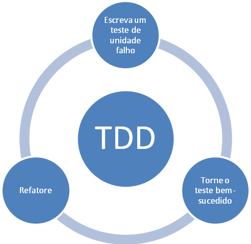

Na realização de testes, possuimos o sistema chamado "T.D.D.".: Test Driven Development (Desenvolvimento Direcionado a Testes). Que funciona com o esquema da imagem ao lado.
A principal ideia desses teste é criarmos um algoritmo de teste antes do nosso projeto.
Existem 3 tipos de teste:
Testam uma única unidade do sistema, uma classe ou funcionalidade, por exemplo.
Verificam se as classes e/ou componentes estão se integrando corretamente.
Testa o sistema já integrado, são verificados principalmente os requisitos em um ambiente de produção.